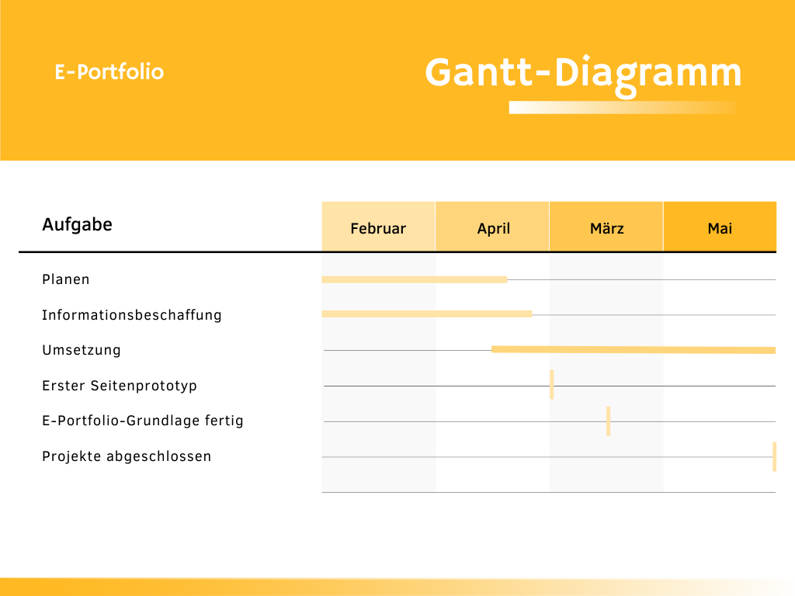

Projektantrag
1) Suchen Sie einen Prozess, bei dem Sie Optimierungspotential erkennen (entweder aus dem Lehrbetrieb, Berufsschule oder ÜK). Beschreiben Sie den Ist-Prozess genau.
Etwas, was mich in meinem Betrieb schon immer gestört hat ist, wie umständlich es sein kann, eine Phishing-E-Mail als solche zu melden. Sollte eine solche bei einem in der Inbox auftauchen, sollte,
wenn diese von jemandem ausserhalb der SFS kommen, ein grosser, gelber Balken auftauchen, der einen auf ebendas hinweisen soll. Ausserdem wird die Möglichkeit angeboten, das Mail entweder überprüfen zu lassen (Check Mail),
oder zu löschen (Flag as Spam). Nachdem das Mail überprüft wurde, wird das Resultat in unserem Portal (ITSM) festgehalten. Jedoch wissen das viele User nicht, und werden deswegen verwirrt. Ausserdem kommt oftmals der Balken
gar nicht zum Vorschein, oder funktioniert nicht.
2) Überlegen Sie sich, wie dieser Prozess besser, effizienter oder günstiger durchgeführt werden könnte. Erstellen Sie dazu in einem Worddokument einen Projektantrag.
| Projektantrag | Spam-Reporting |
|---|---|
| Ausgangslage | Siehe oben |
| Gestaltungsbereich | Betroffen ist die gesamte Firma, jedoch vorwiegend das KV und die IT |
| Ziele / Ergebnisse | Ziel ist die Verringerung der Anzahl von Anrufen an den Helpdesk, und der Quote von erfolgreichen Phishing-Mails |
| Gestaltungsaufgaben / -Ablauf | Innerhalb der nächsten 2 Monate soll eine neue Software eingeführt werden |
| Aufwand / Kosten | Das Projekt dauert 2 Monate, kostet 10'000 CHF in Sachmitteln und 30'000 CHF in Löhnen, also total 40'000 CHF |
| Termine | Meilenstein 1: Projektstart Meilenstein 2: Situationsanalyse und Umfragen Meilenstein 3: Programm erstellt Meilenstein 4: Programm eingeführt |
| Begründung der Attraktivität | Durch die Einführung dieser neuen Software kann die Verwirrung unter den Mittarbeitern massiv verringert werden, und ausserdem den Risikofaktor Phishing grösstenteils eliminiert werden |
| Antragssteller | Silvio Sarikos, Lernender IT |
Phasenablauf IT-Projekt
1) Überlegen Sie sich fünf Aufträge, die Sie in Ihrem Lehrbetrieb ausgeführt haben, aktuell am Bearbeiten sind, oder zukünftig ausführen werden.
- Ich musste per Powershell aus einem Log-File alle Server auslesen und deren IP herausfinden
- Ich musste, wiederum mit Powershell, alle Net-Shares auf einem Server testen, und auf allen jedem Vollzugriff erteilen
- Ich erstellte einen Server, der von einigen anderen Servern alle Log-Files mitliest und speichert.
- Ich schrieb ein Script, dass Daten auf einigen Servern auf andere Festplatten backupt.
- Ich verband Virtuelle und Reale Drucker mit meinen Servern
2) Beschreiben Sie diese Aufträge detailliert und ordnen Sie diese einer Projektphase zu. Begründen Sie Ihre Zuordnung.
Alle dieser Aufträge sind in der Phase der Realisierung angesiedelt, da ich in keinem von diesem gross mit Planung beschäftigt war. Beim ersten Auftrag war ich vorwiegend am Scripten und Problemlösen, aber nie gross am Planen. Das gleiche gilt für den Zweiten Auftrag, wo ich wiederum nur mit Scripten und Googeln beschäftigt war. Der dritte Auftrag war administrativer Natur, also verbrachte ich meine Zeit in der Serverkonsole. Der Vierte war wiederum ein Script, also passierte nichts Spezielles. Der letzte Auftrag benötigte einen echten Drucker, den ich aus unserem Backoffice holen konnte.
3) Haben Sie in der Sekundarschule ein Projekt durchgeführt? Beschreiben Sie dieses und Ihre Erfahrungen damit.
Was für Punkte haben Sie in diesem Projekt gelernt?
In meiner Sekundarstufe fand die Projektarbeit statt, die für mich ein grösserer Flop war. Ich leide unter Konzentrationsschwierigkeiten, habe also grosse Mühe,
mit etwas anzufangen, besonders, wenn es mich nicht, oder nur wenig interessiert. Ich entschied mich dazu eine Art «Klavierduett» zu erstellen, bei dem ich jedoch,
durch die Magie des Videoeditings, beide Teile spielte. Dank meinem zuvor erwähnten Problem schaffte ich es jedoch nicht,
auch nur anzufangen zu üben. An der Woche der Abgabe erledigte ich meine gesamte Projektarbeit, und bekam trotzdem irgendwie eine 5 dafür.
Das wichtigste, was ich dabei lernte, war, dass ich lernen musste, mit meinen Konzentrationsproblemen umzugehen.
Gannt-Diagramm E-Portfolio
1) Strukturieren Sie Ihre Aktivitäten zur Erstellung des E-Portfolios und erstellen Sie dazu ein Gantt-Diagramm.
Verwenden Sie konkrete und realistische Termine und setzen Sie zudem Meilensteine.

2) Beschreiben Sie, wie Ihnen die Aufgabe geglückt ist. War die Planung und Erstellung einfach oder hatten Sie Probleme dabei? Erläutern Sie Ihr Vorgehen und Ihre Erkenntnisse daraus.
Ich konnte das Gantt-Diagramm problemlos mittels eines Online-Tools[4] erstellen. Dafür war auch keine Planung vonnöten, und ich konnte es direkt umsetzen. Mein Erkenntnis daraus ist, dass es oftmals recht einfach ist, solche Aufgaben umzusetzen, wenn man über passende Tools verfügt.
Projektrollen und deren Aufgaben, Kompetenzen und Verantwortlichkeiten
1) Überlegen Sie sich drei verschieden Rollen in einem Projekt und beschrieben Sie diese.
2) Ergänzen Sie zu jeder gefundenen Rollen eine Tabelle meit den Aufgaben, Kompetenzen und Verantwortungen.
Auftraggeber
Der Auftraggeber ist für die Entwicklung und Durchführung des Projekts zuständig.
Er hat die höchste Entscheidungskompetenz, und trägt die strategische Gesamtverantwortung.
| Aufgaben |
Besetzung der anderen Projektrollen, Ressourcen freigeben, Wirtschaftlichen Einsatz dieser sichern |
| Kompetenzen |
Über Projektstopp und -abbruch entscheiden Mitglieder der anderen Projektrollen auswählen |
| Verantwortungen | Gesamtverantwortung |
Projektleitung
Die Projektleitung wird vom Auftraggeber ernannt, und ist für die
Erreichung der Projektergebnisse zuständig. Dabei müssen sie Faktoren wie Zeit und Kosten im Griff behalten.
| Aufgaben |
Erreichung der Projektziele garantieren, Diverse Faktoren regeln |
| Kompetenzen | Projekt abbrechen, Ressourcen planen |
| Verantwortungen | Eine korrekte Umsetzung des Projekts garantieren. |
Qualitätsmanager
Der Qualitätsmanager nimmt eine neutrale Rolle in einem Projekt ein,
und überprüft die Erreichung der Qualitätsziele.
| Aufgaben |
Qualität des Prozesses überwachen und entsprechende Massnahmen ergreifen |
| Kompetenzen | Bearbeitungsmethoden des Projekts anpassen |
| Verantwortungen | Normen kennen, Qualitätsstandards einhalten |
Relfektion
Unser Betrieb arbeitet oftmals mit Projekten, sogenannten DRs. In diesen werden Änderungen vorgeschlagen, welche dann mittels User Stories bearbeitet werden. Ich kann meine Schulischen Erfahrungen nun gleich zum Einsatz bringen, da ich zurzeit an einem solchen Projekt arbeite.